Сестра ми отиде на сватбата с роклята, която аз си купих за себе си.
Аз не можах да я закопчая.
Виж още
FitPatches · Native MSL · ноември 2026
Три мини sales letter реклами по процеса на Anthony Camacho: взимаме структурата на native реклами, които в момента се въртят в нишата, сменяме само hook-а и механизма с нашите UMP и UMS, и пускаме всяка с 5 снимки и 5 primary текста. Тялото е написано по рамката на David Roy.
Стъпка 1
Brandsearch върна грешка: планът няма API кредити, затова търсих директно в Meta Ad Library (GB и US, активни). Тя подрежда по най-нови, така че тези четири са пуснати на 05–06.11.2026. Структурите са това, което работи в нишата сега, но не доказват дълъг живот. За „най-дълго работещи“ трябва upgrade на Brandsearch.
Alice Williams 4 варианта
„That B*tch Went Home Wearing My Goal Jeans“
Социално сравнение с близка жена + конкретна вещ (дънките), която тя носи, а авторката не може. Унижение в първия ред, обяснението идва после.
Пусната 05.11.2026 · Ad Library
Christy Matis 4 варианта
„Lipo and Tummy Tucks Are the Real Scam“
Провокативно твърдение, което дискредитира очевидното решение. Тялото обяснява защо старите решения не могат да работят и чак тогава показва новото.
Пусната 06.11.2026 · Ad Library
Jessica Thompson 4 варианта
„Read this If you’re in your 40s or older and want to lose belly fat“
Директно извикване на аватара по възраст и проблем. Без история в hook-а, само „това е за теб“ и обещание за обяснение.
Пусната 06.11.2026 · Ad Library
Diane Hollis 1 вариант
„I lost 41 pounds before my ex-husband's wedding. Everyone said I looked incredible. My mirror said tired.“
Конкретно събитие (сватба) като рамка на историята. Взехме сватбата за реклама 1, без цифрите в килограми.
Пусната 06.11.2026 · Ad Library
Реклама 1 · swipe от Alice Williams + Diane Hollis
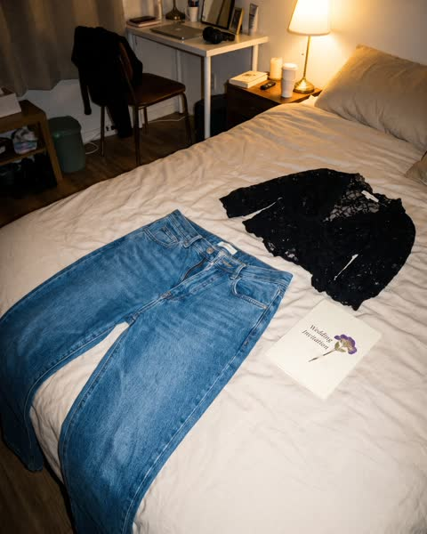
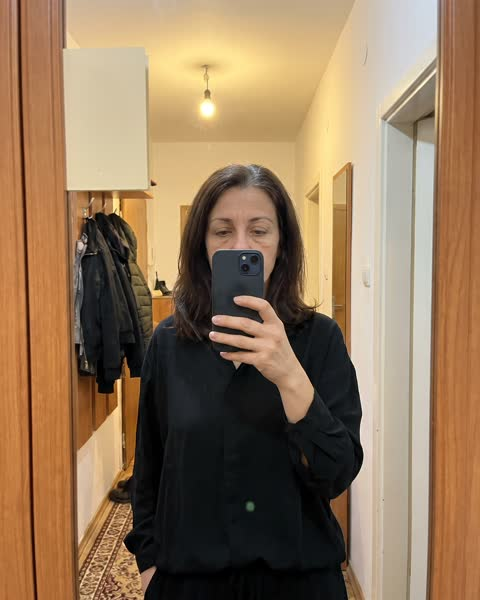
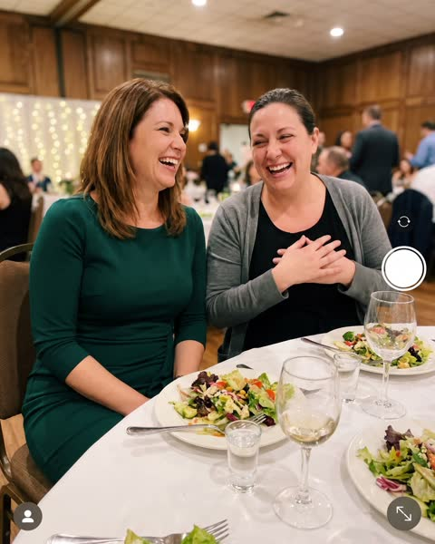
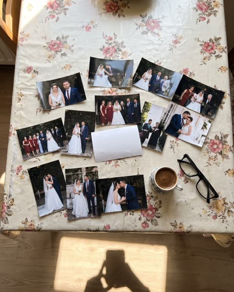
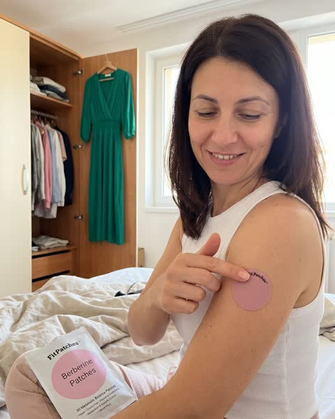
Сестра ми отиде на сватбата с роклята, която аз си купих за себе си.
Аз не можах да я закопчая.
Виж още
На сватбата на братовчедка ни седях с жилетка цяла вечер в 28 градуса.
Само сестра ми знаеше защо.
Виж още
Със сестра ми носим един размер от гимназията.
До миналата година.
Виж още
Когато фотографът извика „сега само сестрите“, аз казах, че отивам до тоалетната.
Виж още
Ям по-малко от сестра си, а тя е с два размера по-малка.
Когато ми каза защо, не повярвах.
Виж още
Сестра ми отиде на сватбата с роклята, която аз си купих за себе си.
Аз не можах да я закопчая.
Сменя се с H1–H5. Тялото отдолу остава същото.
С Деси сме на две години разлика. Цял живот носим един размер и си разменяме дрехи още от гимназията.
През пролетта си купих зелена рокля за сватбата на братовчедка ни. Пробвах я три пъти. Ципът спираше на средата на гърба. Седмица преди сватбата Деси я пробва. Стана ѝ от първия път.
Най-лошото не беше роклята. Най-лошото беше, че Деси ме попита „Сигурна ли си, че нямаш нищо против?“ с онзи внимателен глас. Глас, с който се говори на болен човек.
На сватбата седях до нея в черна блуза и жилетка, която държах закопчана цяла вечер в 28 градуса. Когато фотографът дойде за снимка на сестрите, казах, че отивам до тоалетната.
Стоях пред огледалото там и си мислех: „Аз ям по-малко от нея. Как е възможно?“
След сватбата я попитах направо какво прави. Очаквах „спрях хляба“ или „ходя на фитнес“.
Тя каза нещо друго. Гинеколожката ѝ обяснила нещо, което на мен никой не ми беше казвал.
След 40, а понякога и няколко години по-рано, естрогенът започва да пада. А естрогенът участва в регулирането на два хормона: лептин, който казва на мозъка „сита си“, и грелин, който казва „гладна си“.
Когато естрогенът спадне, сигналите се объркват. Мозъкът чува „гладна“ по-често и „сита“ по-късно. Ядеш по-малко, а се чувстваш, сякаш постоянно гладуваш. И в един момент се пречупваш.
Затова диетите ми работеха две седмици и после се сриваха. Не беше слаба воля. Борех се с химия.
Деси каза, че хапчетата не ѝ помагали по същата причина. Глътнеш капсула и тя действа наведнъж: пик, после спад. А апетитът не идва веднъж на ден. Той е цял ден.
Това, което ѝ проработило, действа постепенно. Лепенка, която подава активните съставки през кожата бавно, 8 часа подред. Без пик и без спад.
Казва се FitPatches. Малка розова лепенка с берберин (от кисел трън), хром и L-глутамин. Слагаш я сутрин на ръката и забравяш за нея.
Деси ми показа ръката си. Носела я под ръкава на работа три месеца и никой не забелязал.
Първата седмица не усетих нищо особено.
Към десетия ден забелязах, че в 4 следобед не ровя в шкафа за нещо сладко. Не че се сдържах. Просто не ми се искаше.
След месец дънките, които обличах само „в добрите дни“, ми ставаха всеки ден.
След втория месец пробвах зелената рокля. Деси я беше върнала изпрана, с бележка „за следващата сватба“.
Ципът стигна догоре.
Взех си за два месеца, защото имаше отстъпка за по-голям пакет. Доставката беше безплатна и имат 30-дневна гаранция. Ако не ми хареса, връщам ги. Нямаше какво да губя.
Можеш да продължиш както досега. Още една диета, още една сватба в черно, още една снимка, от която се криеш.
Или можеш да пробваш нещо, което работи с причината, а не срещу нея. 30 дни. Ако не усетиш разлика, връщаш ги.
Оставям линка отдолу. Прочети страницата им, там е обяснено по-подробно, отколкото мога аз.
Unedited camera-roll photo shot on an iPhone 13 by a non-photographer, vertical 4:5. Slightly off-center framing, natural phone HDR, mild sensor noise, ordinary home light. It must look like a real woman's personal photo, not an advertisement. Night, phone flash on. A pair of blue women's jeans lies flat on a rumpled beige duvet in a small Bulgarian apartment bedroom, the button and buttonhole are about four centimetres apart and will clearly not close. A black going-out blouse and a wedding invitation card with a pressed flower lie next to them. Shot from standing height looking down, a little crooked. RESTRICTIONS: no text overlays, no captions, no watermark, no brand logos, no studio lighting, no stock-photo polish, no close-up of the belly or of body parts, no bathroom scale, no before/after split, keep every person fully clothed.
Unedited camera-roll photo shot on an iPhone 13 by a non-photographer, vertical 4:5. Slightly off-center framing, natural phone HDR, mild sensor noise, ordinary home light. It must look like a real woman's personal photo, not an advertisement. Mirror selfie in a narrow Bulgarian apartment hallway with a wooden wardrobe mirror. A 46-year-old Bulgarian woman, visible fine lines around the eyes, a few grey strands in shoulder-length dark brown hair, mature soft face and figure, wears a loose black blouse and holds the phone so it hides half of her face. Her expression is tired and unconvinced. A plain cream card is tucked into the mirror frame. Warm ceiling bulb light, slight motion blur. RESTRICTIONS: no text overlays, no captions, no watermark, no brand logos, no studio lighting, no stock-photo polish, no close-up of the belly or of body parts, no bathroom scale, no before/after split, keep every person fully clothed.
Unedited camera-roll photo shot on an iPhone 13 by a non-photographer, vertical 4:5. Slightly off-center framing, natural phone HDR, mild sensor noise, ordinary home light. It must look like a real woman's personal photo, not an advertisement. Candid phone photo across a wedding banquet table in a Bulgarian restaurant hall: two sisters in their mid-forties sit side by side laughing, one in a fitted emerald dress, the other in a loose black top with a cardigan over it pulling the cardigan closed. White tablecloth, salads, rakia glasses, string lights, guests blurred behind. Warm mixed light, a little grainy. RESTRICTIONS: no text overlays, no captions, no watermark, no brand logos, no studio lighting, no stock-photo polish, no close-up of the belly or of body parts, no bathroom scale, no before/after split, keep every person fully clothed.
Unedited camera-roll photo shot on an iPhone 13 by a non-photographer, vertical 4:5. Slightly off-center framing, natural phone HDR, mild sensor noise, ordinary home light. It must look like a real woman's personal photo, not an advertisement. Top-down photo of a kitchen table with an oilcloth cover. About twelve printed 10x15 wedding photos are spread out; one photo in the middle is turned face down. A cup of Turkish coffee and reading glasses sit beside them. Afternoon window light, slight shadow of the phone at the edge. RESTRICTIONS: no text overlays, no captions, no watermark, no brand logos, no studio lighting, no stock-photo polish, no close-up of the belly or of body parts, no bathroom scale, no before/after split, keep every person fully clothed.
Use the reference images only for the exact look of the product: the patch is a fully dusty-pink (#F6B8C3) matte round non-woven patch, about 3 cm across, narrower than the wrist, with tiny 'Fit Patches' print around its edge and no white border; the pouch is a white matte stand-up pouch about 10x14 cm with a large pink circle. Unedited camera-roll photo shot on an iPhone 13 by a non-photographer, vertical 4:5. Slightly off-center framing, natural phone HDR, mild sensor noise, ordinary home light. It must look like a real woman's personal photo, not an advertisement. A 46-year-old Bulgarian woman with dark brown hair in a white tank top stands in front of an open wardrobe in the morning, an emerald dress on a hanger hooked on the wardrobe door. She smooths one pink patch onto the outside of her upper arm with two fingers and smiles a little. The white pouch lies on the bed behind her. Soft window light, ordinary bedroom. RESTRICTIONS: no text overlays, no captions, no watermark, no brand logos, no studio lighting, no stock-photo polish, no close-up of the belly or of body parts, no bathroom scale, no before/after split, keep every person fully clothed.
+ 2 референтни снимки на лепенката и плика от Shopify CDN
Реклама 2 · swipe от Christy Matis
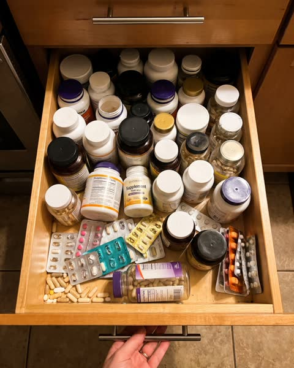
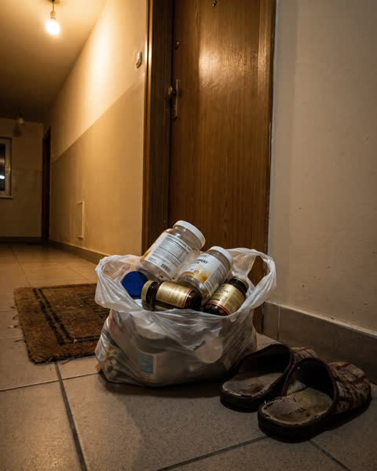
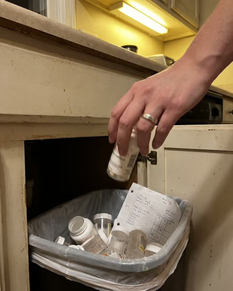
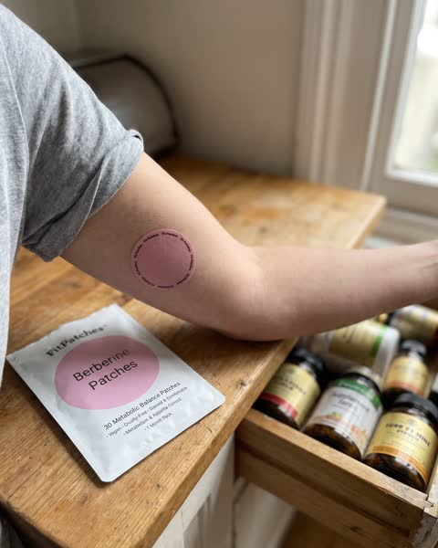
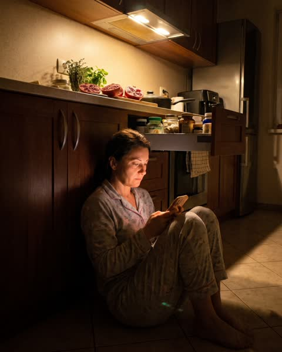
Хапчетата за отслабване са най-скъпата грешка, която направих след 40.
Имам цяло чекмедже с доказателства.
Виж още
Мъжът ми отвори чекмеджето да търси батерии.
Затвори го, без да каже дума.
Виж още
23 опаковки хапчета за отслабване. Повечето до половината.
Ето защо нито едно не проработи.
Виж още
Всяко хапче в чекмеджето ми обещаваше да „гори мазнини“.
Нито едно не се занимаваше с истинския проблем.
Виж още
Изхвърлих цялото си чекмедже с добавки.
Остана само една малка розова кутия.
Виж още
Хапчетата за отслабване са най-скъпата грешка, която направих след 40.
Имам цяло чекмедже с доказателства.
Сменя се с H1–H5. Тялото отдолу остава същото.
Гарциния. Зелено кафе. L-карнитин. Ябълков оцет на таблетки. Капсули „за нощно горене на мазнини“. Два вида с берберин.
Преброих ги миналия месец. 23 опаковки. Повечето до половината.
Парите ги преглътнах отдавна. Това, което не можех да преглътна, беше какво си мислех за себе си. Всеки път, когато опаковката свършваше и нищо не се случваше, заключението беше едно: проблемът съм аз. Нямам характер. Не мога да издържа.
Една вечер мъжът ми отвори чекмеджето да търси батерии. Погледна вътре, после погледна мен. Не каза нищо. Затвори го внимателно, сякаш е видял нещо, което не трябваше.
Тази нощ седях на пода в кухнята до 2 и четях форуми.
Тогава попаднах на обяснение, което никоя реклама не ми беше давала.
Около менопаузата и години преди нея естрогенът пада. А естрогенът участва в регулирането на лептина, хормона на ситостта, и грелина, хормона на глада. Когато той спадне, мозъкът започва да получава грешни сигнали: гладна си, дори когато не си.
Всяко хапче в чекмеджето ми се опитваше да „гори мазнини“ или да „ускори метаболизма“. Нито едно не се занимаваше с това, че мозъкът ми цял ден чува „яж“.
Имаше и втори проблем, за който не се бях замисляла. Капсулата действа наведнъж. Глътнеш я, нивото скача, после пада. А гладът не идва веднъж. Идва в 11, в 4 и в 9 вечерта.
Ако искаш по-спокоен апетит, трябва нещо, което действа равномерно през целия ден. Затова лепенките през кожата се ползват от десетилетия: кожата пропуска веществото бавно и постоянно.
Така стигнах до FitPatches. Розова лепенка с берберин (от кисел трън), хром и L-глутамин, която подава съставките през кожата 8 часа. Слагаш я сутрин на ръката. Не гълташ нищо и не трябва да помниш нищо.
Признавам, че поръчах с мисълта „това е номер 24“.
Първите дни нищо.
Към края на втората седмица се хванах, че съм забравила за сладкото след вечеря. Не съм се борила със себе си. Просто не се сетих.
След месец колежка ме попита дали съм сменила прическата. Не бях.
След два месеца изпразних чекмеджето. Цялото. Остана само кутията с лепенките.
Имат 30-дневна гаранция и безплатна доставка. За разлика от 23-те опаковки, тук поне знаех, че ако не проработи, ще си върна парите.
Можеш да купиш опаковка номер 24 от поредното хапче и да видиш как пак свършва преди резултата.
Или можеш да пробваш нещо, което работи там, където е проблемът, без да разчита на волята ти. С гаранция, че ако не стане, нищо не губиш.
Линкът е отдолу. На страницата обясняват механизма много по-добре от мен.
Unedited camera-roll photo shot on an iPhone 13 by a non-photographer, vertical 4:5. Slightly off-center framing, natural phone HDR, mild sensor noise, ordinary home light. It must look like a real woman's personal photo, not an advertisement. Top-down photo of a pulled-out kitchen drawer stuffed with about thirty half-used supplement jars, capsule bottles and blister packs in many colours and sizes, lids mixed up, a few loose capsules in the corner. Harsh overhead kitchen light, a hand holding the drawer handle at the bottom of the frame. RESTRICTIONS: no text overlays, no captions, no watermark, no brand logos, no studio lighting, no stock-photo polish, no close-up of the belly or of body parts, no bathroom scale, no before/after split, keep every person fully clothed.
Unedited camera-roll photo shot on an iPhone 13 by a non-photographer, vertical 4:5. Slightly off-center framing, natural phone HDR, mild sensor noise, ordinary home light. It must look like a real woman's personal photo, not an advertisement. A plastic supermarket bag full of half-empty supplement jars and pill bottles stands on the floor next to the front door of a Bulgarian apartment, beside a pair of slippers and a doormat, as if ready to be thrown out. Dim hallway light, phone held at hip height. RESTRICTIONS: no text overlays, no captions, no watermark, no brand logos, no studio lighting, no stock-photo polish, no close-up of the belly or of body parts, no bathroom scale, no before/after split, keep every person fully clothed.
Unedited camera-roll photo shot on an iPhone 13 by a non-photographer, vertical 4:5. Slightly off-center framing, natural phone HDR, mild sensor noise, ordinary home light. It must look like a real woman's personal photo, not an advertisement. Close-up of a woman's hand with a simple silver ring dropping a white capsule bottle into a kitchen trash bin that already holds several other supplement bottles and a crumpled diet-plan printout. Evening kitchen light, slight motion blur on the falling bottle. RESTRICTIONS: no text overlays, no captions, no watermark, no brand logos, no studio lighting, no stock-photo polish, no close-up of the belly or of body parts, no bathroom scale, no before/after split, keep every person fully clothed.
Use the reference images only for the exact look of the product: the patch is a fully dusty-pink (#F6B8C3) matte round non-woven patch, about 3 cm across, narrower than the wrist, with tiny 'Fit Patches' print around its edge and no white border; the pouch is a white matte stand-up pouch about 10x14 cm with a large pink circle. The patch must read clearly as a SOLID, opaque, flat dusty-pink disc stuck on the skin, like a pink round plaster, fully filled with pink colour, clearly visible at phone-photo distance. Unedited camera-roll photo shot on an iPhone 13 by a non-photographer, vertical 4:5. Slightly off-center framing, natural phone HDR, mild sensor noise, ordinary home light. It must look like a real woman's personal photo, not an advertisement. A 47-year-old woman's arm rests on a wooden kitchen counter, sleeve of a grey t-shirt pushed up, one solid pink patch on the outside of her upper arm in sharp focus. Behind the arm an open kitchen drawer full of old supplement jars is slightly out of focus, the white pouch with the pink circle lies on the counter. Morning light, photo taken with her other hand. RESTRICTIONS: no text overlays, no captions, no watermark, no brand logos, no studio lighting, no stock-photo polish, no close-up of the belly or of body parts, no bathroom scale, no before/after split, keep every person fully clothed.
+ 2 референтни снимки на лепенката и плика от Shopify CDN
Unedited camera-roll photo shot on an iPhone 13 by a non-photographer, vertical 4:5. Slightly off-center framing, natural phone HDR, mild sensor noise, ordinary home light. It must look like a real woman's personal photo, not an advertisement. Night. A 47-year-old Bulgarian woman in pajamas sits on the kitchen floor leaning against the lower cabinets, knees up, reading something on her phone; the phone screen lights her face. An open drawer of supplement jars above her. Only the cooker-hood light is on, very grainy. RESTRICTIONS: no text overlays, no captions, no watermark, no brand logos, no studio lighting, no stock-photo polish, no close-up of the belly or of body parts, no bathroom scale, no before/after split, keep every person fully clothed.
+ 2 референтни снимки на лепенката и плика от Shopify CDN
Реклама 3 · swipe от Jessica Thompson
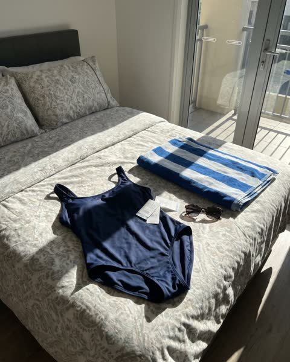
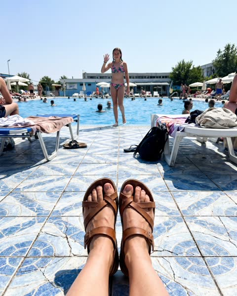
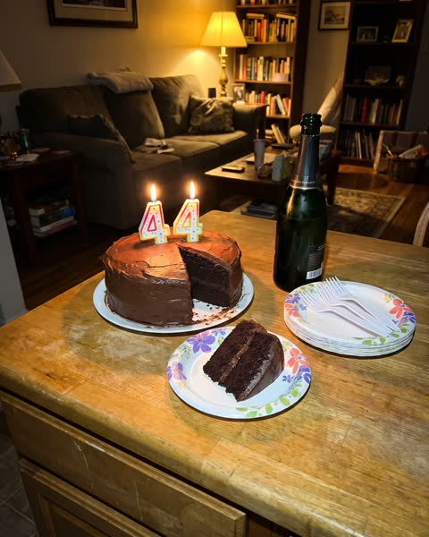
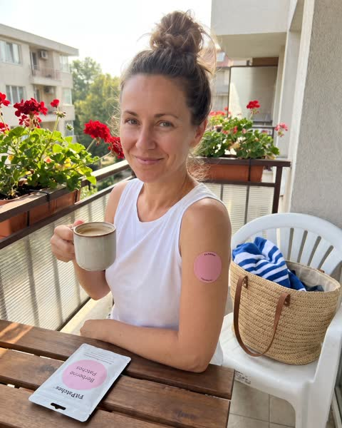
Прочети това, ако си над 40, ядеш по-малко от преди, а дрехите пак не стават.
Не си мързелива.
Виж още
Банският, който си купих миналото лято, още е с етикетите.
Ето защо.
Виж още
Ям по-малко от мъжа си, а дрехите не ми стават.
Той яде двойно и нищо.
Виж още
След 40 тялото ти сменя правилата на глада.
На мен никой не ми го каза.
Виж още
Ако диетите ти издържат точно две седмици, не е характер.
Има причина и тя е хормонална.
Виж още
Прочети това, ако си над 40, ядеш по-малко от преди, а дрехите пак не стават.
Не си мързелива.
Сменя се с H1–H5. Тялото отдолу остава същото.
На 39 можех да сваля малко за две седмици, ако спра хляба. На 44 спрях хляба, захарта и вечерята след 7. Не се промени нищо.
Ям по-малко от мъжа си. Ходя пеша по 40 минути. И пак всеки сезон вадех дрехите от гардероба и половината не ставаха.
Кантарът не ме интересуваше толкова. Болеше ме, че спрях да се разпознавам. На снимките виждах майка си. В огледалото виждах някаква уморена жена, която не съм аз.
Миналото лято дъщеря ми ме покани на басейна с приятелките си. Купих си бански специално за това. Облякох го, погледнах се и казах, че ме боли глава.
Банският още е с етикетите в чекмеджето.
Месеци по-късно прочетох нещо, което обясни всичко.
Около 40, а при някои жени и по-рано, естрогенът започва да намалява. Малко хора знаят, че естрогенът участва в регулирането на апетита. Той помага на два хормона да работят правилно: лептин (ситост) и грелин (глад).
Когато естрогенът спадне, тези сигнали се разместват. Мозъкът казва „гладна“ по-често, а „стига“ по-късно. Затова диетите след 40 се усещат като постоянно гладуване. Затова издържаш две седмици и се пречупваш.
Това не е характер. Това е механизъм, който на 30 го нямаше.
Повечето продукти за отслабване са измислени за тяло, при което този механизъм още работи. Хапче сутрин действа няколко часа и спада. А гладът след 40 е цял ден.
Логичното решение е нещо, което действа равномерно и не изисква воля. Нещо, което слагаш и забравяш.
Намерих FitPatches. Розова лепенка с берберин (от кисел трън), хром и L-глутамин. Слагаш я сутрин на ръката и тя подава съставките през кожата постепенно, 8 часа. Не гълташ хапчета и не броиш нищо.
Първата седмица нищо специално.
Втората седмица забелязах, че следобедният глад, онзи в 4 часа, просто го нямаше.
След месец ядях нормално, без да се боря със себе си цял ден.
След третия месец извадих банския от чекмеджето. Махнах етикетите. Отидох на басейна с дъщеря ми.
Доставката е безплатна и имат 30-дневна гаранция. Взех за два месеца с отстъпка, защото знаех, че на тялото му трябва време.
Имаш два пътя.
Можеш да продължиш да се обвиняваш и да започваш нова диета всеки понеделник, още две години, докато банският стои с етикетите.
Или можеш да пробваш нещо, направено за тялото, което имаш сега, а не за това, което имаше на 30. 30 дни, с гаранция.
Оставям линка отдолу. Ако си стигнала дотук, страницата им си заслужава.
Unedited camera-roll photo shot on an iPhone 13 by a non-photographer, vertical 4:5. Slightly off-center framing, natural phone HDR, mild sensor noise, ordinary home light. It must look like a real woman's personal photo, not an advertisement. A navy one-piece swimsuit with the shop price tags still attached lies on a made bed next to a folded striped beach towel and sunglasses, as if never worn. Late afternoon sun through a balcony door, shot from above at a slight angle. RESTRICTIONS: no text overlays, no captions, no watermark, no brand logos, no studio lighting, no stock-photo polish, no close-up of the belly or of body parts, no bathroom scale, no before/after split, keep every person fully clothed.
Unedited camera-roll photo shot on an iPhone 13 by a non-photographer, vertical 4:5. Slightly off-center framing, natural phone HDR, mild sensor noise, ordinary home light. It must look like a real woman's personal photo, not an advertisement. Point-of-view photo looking down at a woman's feet in plain sandals standing at the tiled edge of a busy Bulgarian outdoor public pool in July; blue water, a teenage girl waving from the water in the background. Bright midday sun, slightly overexposed sky. RESTRICTIONS: no text overlays, no captions, no watermark, no brand logos, no studio lighting, no stock-photo polish, no close-up of the belly or of body parts, no bathroom scale, no before/after split, keep every person fully clothed.
Unedited camera-roll photo shot on an iPhone 13 by a non-photographer, vertical 4:5. Slightly off-center framing, natural phone HDR, mild sensor noise, ordinary home light. It must look like a real woman's personal photo, not an advertisement. Phone-flash photo of a home-made chocolate birthday cake on a kitchen table with two number candles '4' and '4' burning, one slice already cut out, paper plates and a bottle of sparkling wine. Dim room behind. RESTRICTIONS: no text overlays, no captions, no watermark, no brand logos, no studio lighting, no stock-photo polish, no close-up of the belly or of body parts, no bathroom scale, no before/after split, keep every person fully clothed.
Unedited camera-roll photo shot on an iPhone 13 by a non-photographer, vertical 4:5. Slightly off-center framing, natural phone HDR, mild sensor noise, ordinary home light. It must look like a real woman's personal photo, not an advertisement. Candid photo from a few metres away at an outdoor pool: a 44-year-old Bulgarian woman wearing a light linen beach shirt over her swimsuit sits on the pool edge with her feet in the water, laughing with her teenage daughter next to her. Sunny, people and loungers in the background, a little crooked framing. RESTRICTIONS: no text overlays, no captions, no watermark, no brand logos, no studio lighting, no stock-photo polish, no close-up of the belly or of body parts, no bathroom scale, no before/after split, keep every person fully clothed.
Use the reference images only for the exact look of the product: the patch is a fully dusty-pink (#F6B8C3) matte round non-woven patch, about 3 cm across, narrower than the wrist, with tiny 'Fit Patches' print around its edge and no white border; the pouch is a white matte stand-up pouch about 10x14 cm with a large pink circle. The patch must read clearly as a SOLID, opaque, flat dusty-pink disc stuck on the skin, like a pink round plaster, fully filled with pink colour, clearly visible at phone-photo distance. Unedited camera-roll photo shot on an iPhone 13 by a non-photographer, vertical 4:5. Slightly off-center framing, natural phone HDR, mild sensor noise, ordinary home light. It must look like a real woman's personal photo, not an advertisement. Morning on a small Bulgarian apartment balcony with red geraniums. A 44-year-old woman in a white sleeveless top holds a mug of coffee; one solid pink patch is clearly visible on the outside of her upper arm, facing the camera. A packed straw beach bag with a striped towel sits on a plastic chair beside her and the white pouch with the pink circle lies on the balcony table. Soft sun, relaxed, photo taken by her husband from a metre away. RESTRICTIONS: no text overlays, no captions, no watermark, no brand logos, no studio lighting, no stock-photo polish, no close-up of the belly or of body parts, no bathroom scale, no before/after split, keep every person fully clothed.
+ 2 референтни снимки на лепенката и плика от Shopify CDN
Стъпка 5
| Кампания | 1 Sales кампания за теста. Трите реклами в отделни ad set-ове, за да се види коя история продава. |
|---|---|
| Ad set | Жени 40–60, България, broad. Native MSL е писан за Facebook Feed, там се очаква основният обем. |
| Реклама | 1 реклама на ad set във flexible формат: 5 снимки, 5 primary текста (H1–H5 + същото тяло), 1 headline, 1 description. 5 × 5 = 25 комбинации, общо 75 за трите. |
| Primary текстове | Готови за копиране в native-ads/primary-texts/ или с бутона на всеки hook. |
| Снимки | 1080 × 1350 в native-ads/meta-1080/. |
| Как се чете | По покупки и CPA. Нисък CPC и висок CTR значат, че hook-ът спира скрола, но не значат, че тялото продава. Ако има кликове без покупки, проблемът е в belief частта или в landing-а, не в hook-а. |
Преди качване